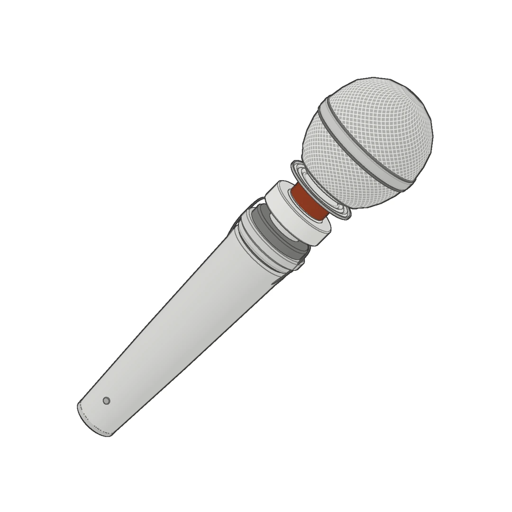

Line Cutaway
Anatomyof a voice.
How does a word on your lips become a voltage in a winding of copper?
Watch the two films
Scroll to open the microphone
Listening in section
Isolate a track.
Lift out the voice and listen for struck bars and plucked strings. Then hear the little ticks where the drawing opens and the parts settle.